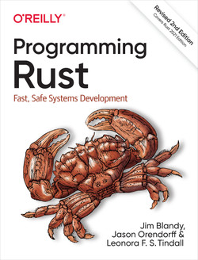

Rationale
I am very happy with but I want to learn something new, another programming language. The desire comes with several needs
Opposite of R:
- A compiled language
- Speed
- Strict syntax, almost pedantic
- Strongly typed
Similarities to R:
- Full of functional programming
- Great packages offered by a great community (crates)
Turns out this language is Rust.
Advantages
Compiler
It is incredibly helpful. I am using VScode with the extension rust-analyser that provides immediate feedback, great suggestions to both warnings and errors.
Bonus: the logo
It has the two things I like a lot:
- A from (a chainring)
- A big R that looks very much like

Learning material

I am using so far three resources:
The Programming Rust book (Ed. O’Reilly). From a recommendation by Stefan Baumgartner
The official documentation that includes a lot of example.
The “How to learn Rust” course by Tim McManara (only $25). From a recommendation of Jonathan Caroll
Example of syntax
Programs are managed by the cargo utility. It creates, run, test, optimize Rust code. Here is one of official documentation example. We need the rand crate dependency. Here we specify the wanted version 0.8.5.
The code for the main guessing is included.
use std::io;
use std::cmp::Ordering;
use rand::Rng;
fn main() {
println!("Guess the number!");
let max = 50u32;
// to keep track of the number of guesses
let mut count = 0u32;
// create an integer randomly from 1 to 50
let secret_number = rand::thread_rng().gen_range(1..=max);
// loop over until the number is found
loop {
count += 1;
println!("Please input your guess. (an integer from 1 to {max})");
let mut guess: String = String::new();
io::stdin()
.read_line(&mut guess)
.expect("Failed to read line");
// coerce to an integer
let guess: u32 = match guess.trim().parse() {
Ok(num) => num,
// but offer possibily to change
Err(_) => {
println!("You entered {}, not a number", guess.trim());
continue;
}
};
println!("You guessed: {guess}"); //while the secret was {secret_number}");
match guess.cmp(&secret_number) {
Ordering::Less => println!("Too small!"),
Ordering::Greater => println!("Too big!"),
Ordering::Equal => {
println!("You win! in {count} trials");
break;
}
}
}
}First project: UMI trimming
UMI stands for Unique Molecular Identifier.
The goal is reproduce some features from umi-tools especially the extract command.
For example, convert the following read
@VH00666:90:AAAWVCCHV:1:1101:24026:1000
GTCAGTTATAGCGGGCGCGCAAAAAAAAAAAAAAAAAAAGATCGGAAGAGCACACGTCTGAACTCCAGTCACTCCC
[...]into:
@VH00666:90:AAAWVCCHV:1:1101:24026:1000_GTCAGT
GCGGGCGCGCAAAAAAAAAAAAAAAAAAAGATCGGAAGAGCACACGTCTGAACTCCAGTCACTCCCThe UMI was GTCAGT and appended to the read name, while being removed from the sequence along with the TATA linker.
Rust-bio
This library rust-bio provides many features, and I am only using the
alphabetsto check the letters are actually IUPAC / DNAfastqfor Reading/Writing FASTQ reads.
The Command Line Interface (CLI) utility: clap
clap is an awesome library that helps making a CLI fun and easy.
The help output looks like (options actually appear in bold:
$ umi_trim -h
Move Unique Molecular Identifier from seq to name and trim a linker motif (TATA)
Usage: umi_trim [OPTIONS] --input <INPUT> --output <OUTPUT>
Options:
-i, --input <INPUT> FASTQ filename to read from
-o, --output <OUTPUT> Filename to write to
-u, --umi-length <UMI_LENGTH> UMI length in characters [default: 6]
-l, --linker <LINKER> Linker UMI-READ to be discarded [default: TATA]
-h, --help Print help
-V, --version Print versionThis project is here on